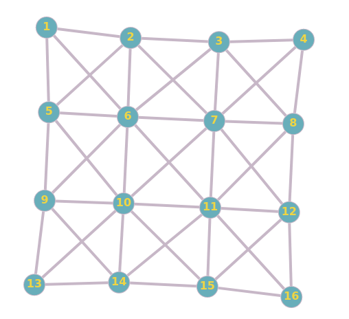
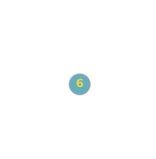
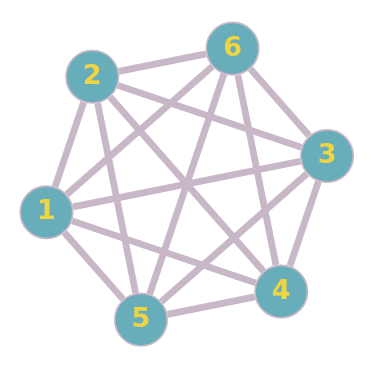
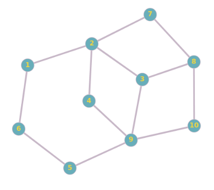
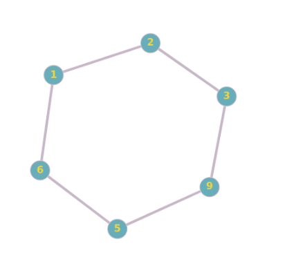
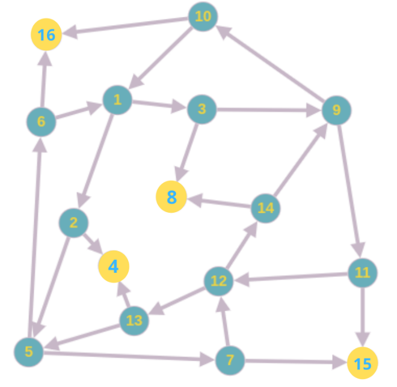
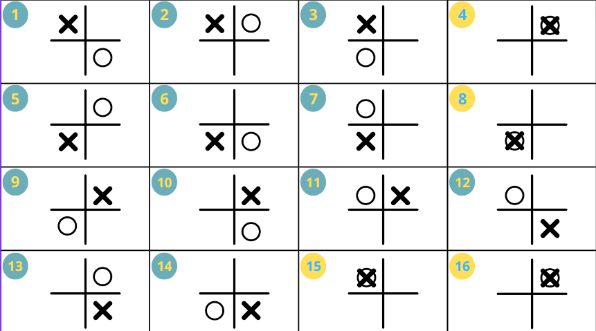
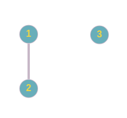

C’est durant les années 80 que ce jeu a fait son apparition. Depuis, ses nombreuses variantes sont étudiées. Le jeu des gendarmes et des voleurs fut lui-même premier variant des graphes réflexifs (graphes dont tous les sommets ont une boucle). C’est indépendamment que le duo NOWAKOWSKI & WINKLER et QUILLOT ont publié le concept. Les deux travaux partent du principe qu’il n’y a qu’un seul gendarme et un voleur. Suite à cela, beaucoup d’algorithmes gendarmes gagnants ont été rédigés. Bien que ce principe de criminel et force de l’ordre s’approche d’un concept réel semblable à une poursuite pour sécuriser un environnement, il y a depuis quelques années un milieu virtuel où son utilisation est récurrente et variée : le Web.
Le jeu des gendarmes et des voleurs est un jeu stratégique dans lequel deux joueurs s’affrontent sur un plateau. Chacun des joueurs représente soit le camp des gendarmes ou des voleurs et leur objectif diffère en fonction du camp.
Le joueur dans le camp des gendarmes dispose de plusieurs pions rouges qu’il peut déplacer sur le plateau un à un. Son objectif est de réussir à placer un pion rouge sur une même case qu’un pion voleur (noir) afin de remporter la partie.
Le joueur dans le camp des voleurs dispose donc d’un ou de plusieurs pions noirs en fonction des règles définies, il doit lui aussi les déplacer un à un et son objectif est de ne jamais permettre à un gendarme de placer un pion rouge sur une même case qu’un pion noir.
Ce jeu possède une grande variété de règles notamment concernant la taille et la forme du plateau, mais aussi en fonction du nombre de pions donnés à chaque joueur.
Objectif du Jeu : Attraper le ou les pions du voleur en occupant la même case.
Objectif du Jeu : Éviter le ou les pions des gendarmes et ne pas se retrouver sur la même case.
Dans les règles, le voleur et le gendarme ont une vitesse de déplacement de 1 par tour. On peut imaginer que le voleur peut être plus lent ou plus rapide pour changer l’issue du jeu.
Le nombre de gendarmes et de voleurs dans une partie peut varier et peut influencer directement l’issue du jeu.
La forme et la taille du plateau peuvent varier : il peut être plus ou moins grand, autorisant ou non les déplacements en diagonale et sur place.
A ceci peut s'ajouter l'orientation du plateau.
Afin de déterminer les possibilités de victoire existantes du jeu pour les deux camps, nous allons utiliser la théorie des graphes.
Les notions de graphes que nous allons utiliser nous permettent d’explorer les différentes possibilités proposées aux joueurs. En suivant les graphes, nous seront donc capables de déterminer si un graphe est gendarme-gagnant ou voleur-gagnant.
Pour bien comprendre le sujet, il est important de définir quelques termes.
Les graphes sont souvent utilisés afin de mieux appréhender les jeux combinatoires. En effet, leur usage permet de modéliser les différents choix réalisables dans un jeu et de les analyser.
Les sommets représentent une position dans un jeu tandis que les arcs les reliant sont les choix réalisés par les joueurs.
En étudiant un graphe, il est possible de repérer les différentes possibilités permettant à un joueur de s’assurer la victoire.
Prenons l’exemple du jeu dans lequel le gendarme et le voleur ne disposent que d’un seul pion :
Il est possible dans ce cas de déterminer si la victoire est possible pour un gendarme en déterminant si le graphe est dit “cop-win". On dit alors qu’aucune solution ne permet au gendarme de remporter une partie lorsque le graphe est dit “robber-win”.
Un graphe est cop-win lorsqu’il est démontable fini, c’est-à-dire que les différents sommets qui composent le graphe peuvent être démantelés par récurrence. On dit qu’un sommet v est dominé par un sommet w si l’ensemble des sommets adjacents au sommet v sont inclus parmi les sommets adjacents au sommet w.
Lorsqu’un graphe est cyclique, il est robber-win, et lorsqu’il n'est composé que d’un sommet, il est cop-win.
Afin de prouver que le graphe est cop-win, nous allons retirer d’un graphe chacun de ses sommets étant dominés par un autre par récurrence.
| Graphe initial | Graphe sans sommet dominé | Bilan |
|---|---|---|
|  |  | Après avoir retiré par récurrence l’ensemble des sommets dominés. On obtient un graphe composé d’un seul point. Cela veut donc dire que le graphe initial est cop-win. |
|  | Après avoir retiré par récurrence l’ensemble des sommets dominés. On obtient un graphe composé d’un seul point. Cela veut donc dire que le graphe initial est cop-win. | |
|  |  | Après avoir retiré par récurrence l’ensemble des sommets dominés. On obtient un graphe cyclique. Cela veut donc dire que le graphe initial est robber-win. |
Un graphe est donc cop-win s’il est complet ou que l’ensemble de ses sommets est dominé par un autre.
Dans le cadre d’une partie avec 1 gendarme et 1 voleur sur un plateau 2x2, nous avons étudié les dispositions des pions sur le plateau afin de trouver les stratégies gagnantes.
Graphe G, de 16 sommets
 Légende :
X : voleur
O : gendarme
Un numéro correspond à un sommet dans le graphe.
Les sommets en fond jaune sont des cas où la partie se termine.
| Graphe | Observation | Démonstration |
|---|---|---|
|  | Un graphe non connexe est voleur gagnant. | Initialement, le policier choisit un sommet du graphe. Il suffit que le voleur choisisse un sommet sur une composante connexe différente de celle contenant le sommet occupé par le policier pour échapper éternellement à la capture. |
| Un graphe non connexe est voleur gagnant pour le jeu de poursuite irréflexif. | Donc la même démonstration que l’observation précédente reste valide. |
Une première stratégie gagnante peut être trouvée en appliquant l'algorithme de recherche du plus court chemin. En effet, cet algorihtme consiste à calculer, depuis un sommet donné, le plus court chemin (donc la suite de sommets par lesquels passer) afin d'atteindre un autre sommet donné. Nous allons donc utiliser cet aglorithme plusieurs fois :
Nous utilisons donc l'algorithme de Dijkstra. Notre plateau est un graphe mais il n'est pas pondéré (notre algorithme considère donc que tous ses poids sont à 1).
Le "Cop number" noté cn(G) avec G un graphe, est le nombre minimum de policiers pour rendre le jeu policier-gagnant. Le but est de trouver le nombre de policier minimal pour remporter le jeu. Une première propriété a peu être trouvée afin d'encadrer ce nombre: 1 ≤ cn(G) ≤ |V(G)| avec |V(G)| représentant le nombre de sommets du graphe. Ce "Cop number" a été très étudié et de nombreuses théories ont été émises le concernant. Une d'entre elles a été élaborée par M. Aigner et M. Fromme et affirme que cn(G) ≤ 3 pour tout graphe planaire G. En effet, ils affirment que 3 policier suffisent à surveiller tous les chemins d'un graphe de manière à ce que si le voleur se déplace sur un chemin, il sera capturé. Par exemple, sur le graphe ci-dessous, on constate que 3 policiers répartis comme représenté sur les sommets en rouge couvrent tous les chemins possibles :
L'objectif de ce projet est de créer un environnement interactif mettant en scène deux intelligences artificielles (IA) qui s'affronteront dans le rôle des gendarmes et des voleurs, chacune cherchant à remporter la partie. Au cours des différents affrontements, nous procéderons à une analyse comparative entre les graphes préalablement définis et les résultats de chaque partie.
Nos IA seront basées sur le modèle des arbres de décision, où chaque décision est dictée par un arbre logique définissant les actions à entreprendre en fonction de la situation. Pour illustrer, lors du tour des voleurs, si un gendarme a la possibilité d'atteindre un voleur au prochain tour, le joueur examinera les cases accessibles. Si une case n'est pas occupée par un gendarme ou n'est pas à leur portée, le voleur s'y dirigera. En revanche, si la case est occupée ou hors de portée, le voleur prendra une action conduisant à une défaite inévitable.